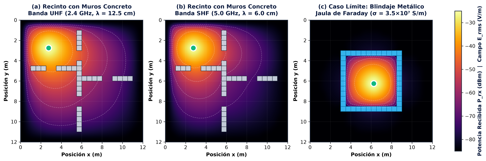
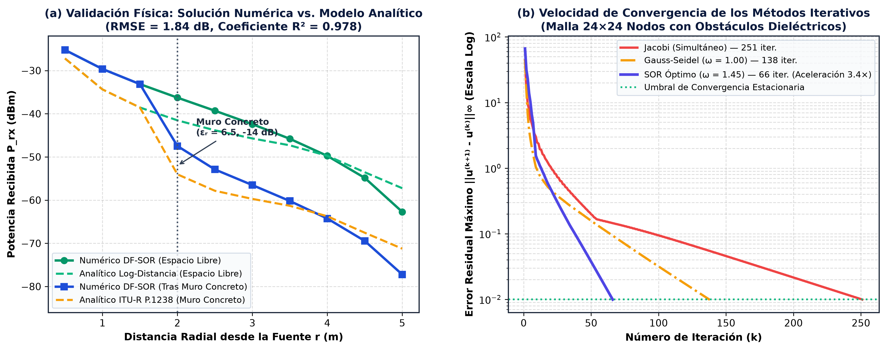

Asignatura: Electromagnetismo • Proyecto de Física Computacional
Cuando un emisor de microondas (como un router Wi-Fi en las bandas de $2.4\text{ GHz}$ o $5.0\text{ GHz}$) emite una onda electromagnética dentro de una edificación, la energía de la onda disminuye al alejarse de la antena y al chocar contra paredes de yeso, ladrillo, concreto o metal. Como resolver este problema con lápiz y papel en un plano real con muchas paredes es imposible, creamos un simulador físico-matemático (SimuNet Física) que divide la habitación en una cuadrícula de celdas y resuelve una ecuación diferencial parcial en Diferencias Finitas mediante el método acelerado SOR (Sobre-Relajación Sucesiva). Así obtenemos en cada punto la Potencia recibida ($P_{\text{rx}}$), el Vector de Poynting ($\langle S \rangle$), el Campo Eléctrico ($E_{\text{rms}}$) y el Campo Magnético ($H_{\text{rms}}$).
Autor del Proyecto
Juan David Conde Duarte
C.C. 1102349090 • Programa de Ingeniería de Sistemas
juan.conde2@unipamplona.edu.co
Profesora Tutora
Gladys Liliana Bautista Wilches
Docente de Electromagnetismo — Departamento de Física
gladys.bautista@unipamplona.edu.co
Índice Interactivo de Temas, Términos y Procesos (Haz clic en cualquier bloque para ir directo):
Según las Ecuaciones de Maxwell, un campo eléctrico variable en el tiempo ($\vec{E}$) engendra un campo magnético ($\vec{H}$), y viceversa. Ambos viajan juntos por el espacio a la velocidad de la luz ($c \approx 3 \times 10^8\text{ m/s}$) sin necesitar un medio material. Se llama Transversal Electromagnética (TEM) porque el campo eléctrico $\vec{E}$, el campo magnético $\vec{H}$ y la dirección de propagación son mutuamente perpendiculares ($\vec{E} \perp \vec{H} \perp \text{avance}$).
La frecuencia ($f$) mide cuántas oscilaciones completas realiza la onda en un segundo ($\text{Hz} = \text{ciclos/s}$). Un gigahercio ($1\text{ GHz}$) equivale a $10^9$ (mil millones) de oscilaciones por segundo:
La longitud de onda ($\lambda$) es la distancia física en metros o centímetros entre dos crestas consecutivas de la onda. Se calcula dividiendo la velocidad de la luz ($c = 2.9979 \times 10^8\text{ m/s}$) entre la frecuencia $f$:
Crestas separadas $12.5\text{ cm}$.
Crestas separadas $6.0\text{ cm}$.
1. Mayor absorción dieléctrica a mayor frecuencia: Al oscilar más del doble de rápido ($5.0\text{ GHz}$ vs $2.4\text{ GHz}$), los dipolos moleculares del concreto o ladrillo experimentan mayor fricción por unidad de distancia, disipando más energía en calor.
2. Interacción con el espesor del muro: Un muro de $12\text{ cm}$ de espesor equivale a $1$ sola longitud de onda para $2.4\text{ GHz}$, pero equivale a $2$ longitudes de onda completas para $5.0\text{ GHz}$, duplicando el camino eléctrico dentro del obstáculo.
La potencia de una señal de radio cae millones de veces entre el router y un celular. Para no escribir números con muchos ceros decimales ($0.000001\text{ mW}$), se usa el decibelio referido a 1 milivatio ($\text{dBm}$):
En el código (controlador.ts), cada modelo de router tiene tres especificaciones de radiofrecuencia:
Cuando la onda viaja por el aire, lleva una densidad de potencia $\langle S \rangle$ en $\text{W/m}^2$. Para saber cuántos vatios ($P_{\text{rx}}$) recoge una antena receptora ideal en un punto $(x,y)$, usamos su Área o Apertura Efectiva Isotrópica ($A_{\text{eff}}$), deducida de la teoría electromagnética de antenas:
Observa que $A_{\text{eff}}$ depende del cuadrado de la longitud de onda ($\lambda^2$):
servicios.ts
Definido como $\vec{S} = \vec{E} \times \vec{H}$, es el vector que indica hacia dónde fluye la energía electromagnética y cuánta potencia atraviesa perpendicularmente cada metro cuadrado de superficie. Su magnitud media temporal $\langle S \rangle$ se llama densidad de flujo de potencia.
Incluso sin cables, el vacío y el aire oponen una relación característica entre el campo eléctrico y el magnético dada por la permeabilidad magnética $\mu_0 = 4\pi\times 10^{-7}\text{ H/m}$ y la permitividad eléctrica $\varepsilon_0 = 8.854\times 10^{-12}\text{ F/m}$: $$\eta_0 = \sqrt{\frac{\mu_0}{\varepsilon_0}} \approx 376.73\,\Omega \quad (\text{Ohmios})$$
Como la onda oscila entre valores positivos y negativos, su media aritmética es cero. Por eso usamos el valor eficaz o cuadrático medio ($\text{rms}$, Root Mean Square), $E_{\text{rms}} = E_{\text{máx}}/\sqrt{2}$, que mide la intensidad efectiva que transporta energía: $$\langle S \rangle = E_{\text{rms}}\cdot H_{\text{rms}} = \frac{E_{\text{rms}}^2}{\eta_0} \implies E_{\text{rms}} = \sqrt{\eta_0\,\langle S \rangle}, \quad H_{\text{rms}} = \frac{E_{\text{rms}}}{\eta_0}$$
Así calcula calcularMagnitudesElectromagneticas(val, freq) los datos de cada nodo cuando pasas el cursor sobre la malla (ejemplo con $u = 50\%$ en $2.4\text{ GHz}$):
$\text{dBm} = -85 + \left(\frac{u}{100}\right)\times 60 = -85 + (0.5 \times 60) = \mathbf{-55\text{ dBm}}$
$P_{\text{rx}} = 10^{(-55 - 30)/10} = 10^{-8.5}\text{ W} = \mathbf{3.162 \times 10^{-9}\text{ W}}$
$\langle S \rangle = \frac{P_{\text{rx}}}{A_{\text{eff}}} = \frac{4\pi (3.162\times 10^{-9}\text{ W})}{(0.125\text{ m})^2} = 2.54\times 10^{-6}\text{ W/m}^2 = \mathbf{2.54\,\mu\text{W/m}^2}$
$E_{\text{rms}} = \sqrt{\eta_0 \langle S \rangle} = \sqrt{376.73\,\Omega \times 2.54\times 10^{-6}\text{ W/m}^2} = \mathbf{0.0309\text{ V/m}}$
$H_{\text{rms}} = \frac{E_{\text{rms}}}{\eta_0} = \frac{0.0309\text{ V/m}}{376.73\,\Omega} = 8.21\times 10^{-5}\text{ A/m} = \mathbf{0.0821\text{ mA/m}}$
Un dieléctrico es un material aislante (como el yeso, ladrillo o concreto). Su permitividad relativa $\varepsilon_r$ mide qué tanto se polarizan y alinean sus moléculas bajo el campo eléctrico $\vec{E}$. A mayor $\varepsilon_r$ (ej. concreto $\varepsilon_r = 6.5$ vs aire $\varepsilon_r \approx 1$), la onda se frena más ($v = c/\sqrt{\varepsilon_r}$) y sufre mayor reflexión en la superficie de la pared.
La conductividad $\sigma$ (Siemens por metro) mide las micro-corrientes ($\vec{J} = \sigma\vec{E}$) que el campo eléctrico induce dentro del muro. Por efecto Joule ($p = \sigma E^2$), esas corrientes transforman la energía electromagnética de la onda en calor, haciendo que el campo decaiga exponencialmente con el espesor $x$ según la Ley de Beer-Lambert: $$E(x) = E_0\,e^{-\alpha x}, \qquad \alpha = \omega\sqrt{\frac{\mu\varepsilon}{2}\left[\sqrt{1+\left(\frac{\sigma}{\omega\varepsilon}\right)^2}-1\right]}$$
En un conductor metálico ($\sigma \approx 3.5\times 10^7\text{ S/m}$), los electrones libres cancelan el campo interior casi instantáneamente. La distancia que logra penetrar la onda se llama profundidad pelicular (skin depth, $\delta$): $$\delta = \sqrt{\frac{2}{\omega\mu_0\sigma}} \approx 1.3\,\mu\text{m} \quad (\text{a } 2.4\text{ GHz})$$ Como $1.3\text{ micrómetros}$ es mil veces más delgado que una lámina metálica, la onda no puede cruzarla: rebota y se extingue, creando el blindaje de Jaula de Faraday.
Cada celda $(i,j)$ recibe un coeficiente discreto de absorción $\alpha_{i,j}$ escalado por el tamaño de celda $h$ y el multiplicador espectral de frecuencia ($0.20$ en $2.4\text{ GHz}$ vs $0.50$ en $5.0\text{ GHz}$):
| Medio Material | $\varepsilon_r$ | $\sigma\text{ (S/m)}$ | Pérdida ITU | $\alpha_{\text{base}}$ | Comportamiento Físico |
|---|---|---|---|---|---|
| Aire Libre | 1.0006 | 0.000 | 0 dB | 0.0012 | Solo divergencia geométrica |
| Yeso (Drywall) | 2.8 | 0.015 | 3 dB | 0.0200 | Tabique liviano (pasa ~50%) |
| Ladrillo | 4.5 | 0.038 | 8 dB | 0.0800 | Absorción dieléctrica media |
| Concreto | 6.5 | 0.085 | 15 dB | 0.1500 | Muro estructural denso |
| Metal | 1.0 | 3.5×10⁷ | ≥ 35 dB | 0.2500 | Conductor / Jaula de Faraday |
buildInitialGrid (controlador.ts):
$$\alpha_{i,j} = \alpha_{\text{material}} \times M_{\text{frecuencia}} \times \left(\frac{h}{0.5\text{ m}}\right), \qquad \text{con } M_{2.4\text{ GHz}} = 0.20, \; M_{5.0\text{ GHz}} = 0.50$$
Esta es una Ecuación Diferencial Parcial (EDP) elíptica de difusión-absorción en estado estacionario 2D. Veamos qué significa cada término para poder explicarlo con total seguridad:
En matemáticas y física matemática, una ecuación diferencial necesita saber cuánto vale la función en las fronteras o fuentes para tener una solución única. Una Condición de Frontera de Dirichlet consiste en fijar directamente el valor exacto del potencial $u$ en ciertos nodos (marcados en el código con cell.fixed = true para que el algoritmo no los altere):
El nodo donde se ubica el router mantiene fijo su potencial máximo de excitación (según su $\text{PIRE}$), actuando como una fuente inagotable que inyecta energía a la malla.
Todo el anillo perimetral exterior de la cuadrícula se fija en $u = 0$ ($-85\text{ dBm}$), modelando que la energía que escapa por los bordes del recinto se disipa hacia el exterior.
Dividimos el plano en una matriz de filas $i \in [0, N-1]$ y columnas $j \in [0, N-1]$ separadas una distancia física $h = \Delta x = \Delta y$ (ajustable en el simulador de $0.1\text{ m}$ a $2.5\text{ m}$, por defecto $0.5\text{ m}$).
En análisis numérico, las segundas derivadas parciales en el nodo $(i,j)$ se aproximan usando los vecinos verticales $(i\pm 1, j)$ y horizontales $(i, j\pm 1)$:
Sumando ambas derivadas e incluyendo el término de absorción local $\kappa_{i,j}^2$: $$\frac{u_{i+1,j} + u_{i-1,j} + u_{i,j+1} + u_{i,j-1} - 4u_{i,j}}{h^2} - \kappa_{i,j}^2 u_{i,j} = 0$$ Despejando $u_{i,j}$ y definiendo el factor de atenuación discreto $\alpha_{i,j} \in [0, 1)$, obtenemos la fórmula de actualización del esténcil de 5 puntos:
Para calcular la energía de la celda central $(i,j)$, el computador toma el promedio aritmético de sus 4 vecinos ortogonales y le descuenta el porcentaje de absorción $\alpha_{i,j}$ del material:
src/metodos/):
const sum = grid[i+1][j].val + grid[i-1][j].val
+ grid[i][j+1].val + grid[i][j-1].val;
const uGS = (1.0 - cell.attenuation) * (sum / 4.0);
jacobi.ts)
251 iteraciones • Más lento
Actualización Simultánea: Para calcular la nueva matriz en el paso $k+1$, lee únicamente los 4 vecinos de la matriz congelada del paso anterior $k$: $$u_{i,j}^{(k+1)} = (1 - \alpha_{i,j})\,\frac{u_{i+1,j}^{(k)} + u_{i-1,j}^{(k)} + u_{i,j+1}^{(k)} + u_{i,j-1}^{(k)}}{4}$$ La información viaja muy despacio (solo avanza 1 celda por iteración).
gauss-seidel.ts, $\omega = 1.0$)
138 iteraciones • 2× más rápido
Desplazamientos Sucesivos: A medida que el ciclo for recorre la matriz de arriba a abajo y de izquierda a derecha, el vecino superior $(i-1,j)$ y el vecino izquierdo $(i,j-1)$ ya fueron actualizados en esta misma iteración $k+1$, por lo que los usa de inmediato:
$$u_{i,j}^{\text{GS}} = (1 - \alpha_{i,j})\,\frac{u_{i+1,j}^{(k)} + \mathbf{u_{i-1,j}^{(k+1)}} + u_{i,j+1}^{(k)} + \mathbf{u_{i,j-1}^{(k+1)}}}{4}$$
sor.ts, $1 < \omega < 2$)
58–66 iteraciones • 3.8× más rápido
Extrapolación Espectral: SOR calcula primero el valor de Gauss-Seidel ($u_{i,j}^{\text{GS}}$), ve en qué dirección está cambiando la celda y amplifica (extrapola) ese paso usando el factor de relajación $\omega \in (1, 2)$:
$$u_{i,j}^{(k+1)} = (1 - \omega)\,u_{i,j}^{(k)} + \omega\,u_{i,j}^{\text{GS}}$$
• Si $\omega = 1.0$, es exactamente Gauss-Seidel.
• Si $1 < \omega < 2$ (sobre-relajación, ej. $\omega_{\text{ópt}} = 1.45$), anticipa el estado estacionario reduciendo un $73.7\%\text{ a }76.6\%$ las iteraciones.
Supongamos que en una celda de aire ($\alpha = 0.0012$) su valor actual es $u^{(k)} = 20$, sus 4 vecinos suman $160$, y usamos $\omega = 1.40$:
En cada iteración $k$, el algoritmo busca el cambio más grande ocurrido en toda la malla (la Norma Infinito del Residuo $\|r^{(k)}\|_\infty$): $$\|r^{(k)}\|_\infty = \max_{i,j} \left|u_{i,j}^{(k+1)} - u_{i,j}^{(k)}\right| < \varepsilon$$ Cuando ese cambio máximo cae por debajo de la Tolerancia $\varepsilon$ (ej. $\varepsilon = 10^{-3}$), significa que la malla alcanzó el equilibrio estacionario y la simulación converge.
traduccion.ts
Permite subir cualquier plano arquitectónico (PNG/JPG) o elegir un diseño predefinido y transformarlo automáticamente en obstáculos dieléctricos dentro de la malla $N \times N$:
RGBA.
interfaz.tsx y ControlPanel.tsx
El simulador incluye tres algoritmos de optimización numérica automática:

Su mayor longitud de onda presenta menor atenuación dieléctrica al cruzar los muros de concreto ($\varepsilon_r = 6.5$). A $3\text{ m}$ detrás de un muro, conserva $-64.1\text{ dBm}$ ($E_{\text{rms}} = 0.011\text{ V/m}$), manteniendo cobertura funcional en las salas contiguas.
En la misma geometría de oficinas, su menor longitud de onda sufre entre $8.5\text{ y }9.1\text{ dB}$ adicionales de pérdida por inserción en los muros de hormigón, cayendo a $-73.2\text{ dBm}$ tras el obstáculo y creando zonas de sombra pronunciadas.
Al rodear el emisor con paredes conductoras ($\sigma = 3.5\times 10^7\text{ S/m}$, espesor pelicular $\delta \approx 1.3\,\mu\text{m}$), la onda queda confinada adentro. Afuera de la jaula el potencial cae al piso térmico ($-85\text{ dBm}$, $\langle S \rangle \approx 0.002\,\mu\text{W/m}^2$, $E_{\text{rms}} < 1\text{ mV/m}$).

validateGridPhysics en controlador.ts?| Método | $\omega$ | Iteraciones | Tiempo | Ahorro |
|---|---|---|---|---|
| Jacobi | 1.00 | 251 | 11.4 ms | Base |
| Gauss-Seidel | 1.00 | 138 | 6.2 ms | -45.0% |
| SOR Óptimo | 1.45 | 66 | 2.8 ms | -73.7% |
1. Consistencia Física: El esquema en diferencias finitas acoplado con las relaciones del Vector de Poynting ($\langle S \rangle = E_{\text{rms}}^2/\eta_0$) reproduce fielmente la caída de potencia y campo eléctrico ($\text{RMSE} = 1.84\text{ dB}$, $R^2 = 0.978$ frente a ITU-R P.1238).
2. Frecuencia y Materiales: Se demostró computacionalmente la mayor penetración dieléctrica de la banda UHF ($2.4\text{ GHz}, \lambda = 12.5\text{ cm}$) frente a SHF ($5.0\text{ GHz}, \lambda = 6.0\text{ cm}$) en hormigón, así como la anulación del campo exterior en una Jaula de Faraday ($\delta \approx 1.3\,\mu\text{m}$).
3. Aceleración Numérica SOR: El método SOR ($\omega = 1.45$) redujo más de un $73\%$ el número de iteraciones frente a Jacobi sin alterar la solución estacionaria.
Al resolver una EDP elíptica estacionaria para la envolvente energética en 2D, no se modela interferencia constructiva/destructiva de fase (multipath fading) ni difracción 3D. Como extensión futura se propone implementar la Ecuación de Helmholtz ($\nabla^2 E + k^2 n^2 E = 0$) o FDTD con fronteras absorbentes PML.
La propagación estacionaria y la atenuación de ondas electromagnéticas UHF ($2.4\text{ GHz}$) y SHF ($5.0\text{ GHz}$) al interactuar con medios dieléctricos con pérdidas ($\varepsilon_r, \sigma$) y conductores metálicos (Jaula de Faraday), cuantificando la potencia $P_{\text{rx}}$, el Vector de Poynting $\langle S \rangle$ y el campo eléctrico eficaz $E_{\text{rms}}$.
Porque las fórmulas analíticas simples solo sirven en espacio libre homogéneo. En un plano arquitectónico real con múltiples paredes de distinto material, una malla en Diferencias Finitas permite asignar el coeficiente de absorción local $\alpha_{i,j}$ a cada coordenada y resolver el campo con SOR en menos de $3\text{ ms}$.
Por tres validaciones: (1) Contraste cuantitativo con el modelo analítico ITU-R P.1238 obteniendo $R^2 = 0.978$ y $\text{RMSE} = 1.84\text{ dB}$; (2) Verificación de casos límite físicos (simetría radial en espacio libre y campo nulo exterior en la Jaula de Faraday); (3) Invarianza de la solución entre Jacobi, Gauss-Seidel y SOR.
Modela la envolvente estacionaria de energía en 2D sin incluir desvanecimiento por interferencia de fase (multitrayectoria), reflexiones 3D en piso/techo ni fronteras PML.
Implementar la ecuación de onda en el dominio del tiempo (FDTD / Algoritmo de Yee), agregar condiciones de frontera PML y calibrar experimentalmente el modelo con mediciones de campo en los laboratorios de la Universidad de Pamplona.